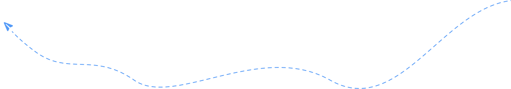
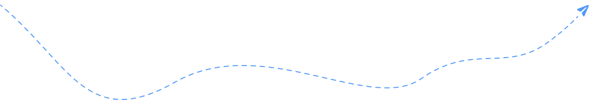
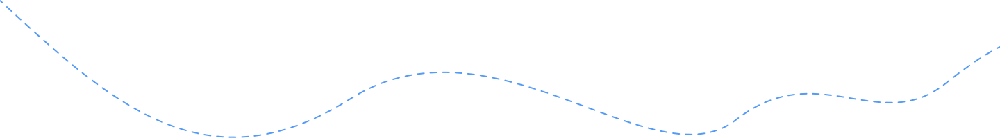

Всё самое важное — в одном поиске
Памятники, степные озёра и музеи региона: фотографии, описания и координаты от тех, кто здесь живёт.
Удобная загрузка фотографий
Точные координаты
на карте
Подробные описания
от местных жителей
Актуальная информация и отзывы путешественников
Попурялрные достопримечательности
Удивительные места, вдохновляющие на новые путешествия

Природа
Бузулукский бор
Автор: Марина К.
(128 оценок)
Широта: 52.8500° с. ш.
Долгота: 52.1000° в. д.
Фотографий: 14
Бузулукский район

Природа
Соляные озёра
Автор: Алексей П.
(85 оценок)
Широта: 59.4500° с. ш.
Долгота: 51.2040° в. д.
Фотографий: 8
Соль-Илецкий округ

Памятник
Караван-Сарай
Автор: Андрей К.
(17 оценок)
Широта: 42.2300° с. ш.
Долгота: 49.4000° в. д.
Фотографий: 25
г. Оренбург

История
Пешеходный мост
Автор: Карина Р.
(128 оценок)
Широта: 42.4500° с. ш.
Долгота: 53.3000° в. д.
Фотографий: 18
г. Оренбург

Музей
Краеведческий музей
Автор: Дарья Ф.
(158 оценок)
Широта: 32.8500° с. ш.
Долгота: 12.1000° в. д.
Фотографий: 11
г. Оренбург


Красоты оренбуржья
Место, где каждый уголок хранит свою историю


Наши партнеры
Вместе мы создаём новые возможности
